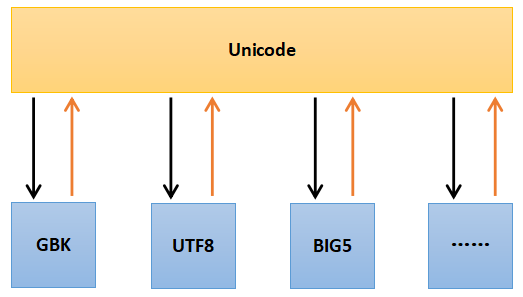

从一开始接触Python就被它的编码问题困扰，遇到问题就从网上找一个解决方案，能解决问题就用，但是也不明白其中的原理，用完就忘了，下次遇到问题的时候再去找。最近我话时间阅读了一些博客和代码，将相关的问题整理下来。
1 编码(Encode)与解码(Decode)
- 世界上只有两种编码：Unicode和other(ASCII,GBK,BIG5,UTF-8)
- other中的所有编码都可以与unicode编码相互转化。Unicode是各种编码之间转换的媒介，other中的编码不能直接相互转化
- ASCII码是单字节编码，GBK,BIG5,UTF-8等是多字节编码。这一点很重要
- 操作系统和大多数编程语言都直接支持Unicode。在计算机内存中处理字符时(如使用Notepad++编辑一个txt文件)，统一使用Unicode编码，当需要保存到硬盘或者需要传输的时候，就转换为other中编码(如UTF-8)对应的字节流。
- Encode: 将 Unicode字符流 转换为 other中编码(如UTF-8)对应的字节流 的过程
- Decode: 将 other中编码(如UTF-8)对应的字节流 转换为 Unicode字符流 的过程

2 常见编码问题
我常遇到的与Python相关的编码问题有两个。为了能够详细的说明问题，我Python源文件的编辑到执行分为了三个阶段：1. 源文件的编辑；2. 解释器读取源文件; 3. 解释器执行源文件。
2.1 源文件编辑
我们使用的编辑器都是有文件编码设置的，如Windows系统自带的记事本在国内默认是GBK，Vim通过配置文件设置为utf-8。磁盘上的文件都是以二进制格式存放的，其中文本文件都是以某种特定编码(如GBK)的字节形式存放的。当使用编辑器打开文本文件Src.py时，编辑器首先在磁盘上读取文件的二进制字节流，然后编辑器会按照其设置的编码方式将字节流解码(Decode)成为我们能够认识的Unicode字符串。注意，当打开某个特定文件时，编辑器设置的编码方式要和文件实际使用的编码一样，即，如果文件使用的是GBK编码，文本编辑器设置的编码方式为GBK才能正确打开这个文件（当我们使用记事本、Notepad++时，这些软件可以自动检查文件的编码方式，然后以这个编码打开文件）。
当文本编辑完成以后，需要保存文件，编辑器首先将其操作的Unicode字符串转换为二进制的字节流(Encode)，然后写入磁盘。
2.2 Python解释器读取源文件
当调用python Src.py执行原文件的时候，Python解释器首先需要读取这个文本文件，但是它不知道这个Src.py是以什么编码方式存储的。如果不告诉它，他就会以ASCII码的来解码(Decode)这个文本文件，所以如果Src.py文件中只有ASCII码字符，一般是能够正确解码的。但是如果这个文件中包含汉字，这个解码过程就会失败，我们需要告诉python解释器，这个文件使用的是何种编码。这就是我们需要在源文件中写入 如下字符串的原因。
1 | # coding:utf-8 |
这行代码告诉解释器，该文件是以utf-8编码的。note: 此处设置的编码要与源文件实际使用的编码方式一致。
关于源文件中声明字符串的两种方式如下：
1 | # coding:utf-8 |
在源文件读取阶段，解释器都会以utf-8解码 u’太阳’ 和 ‘太阳’
在程序执行阶段，
- u’太阳’ 会转化为unicode对象， u开头的字符串会 声明这个字符串是 unicode对象；
- ‘太阳’ 会转化为 utf-8编码的字节串（str对象），此种定义方法实际上声明命了一个str对象。为什么是utf-8，是 “# coding:utf-8” 声明的，所以可以用utf-8解码该字节串，而用gbk解码则失败了。
2.3 Python程序的执行
我常使用的是python2，但是由于ptyhon2产生的时间比较早，所以设计上出现了存在一些问题。以下内容只针对Python 2.x ，Python 3.x 没有以下问题。
2.3.1 字符串与字节串
上面已经讲过，在计算机内存中，字符串中的字符都是Unicode编码的。但是在python刚出现时，还没有Unicode编码，它处理的都是ASCII码这样的单字节字符，所以它将单字的序列定义为字符串，即 类str。以现在的眼光来看，类str的对象实际上是字节串，而不是真正意义上的字符串。还好，后来Python又添加了unicode类，这才是真正意义上的字符串。
类str对象是除unicode以外的所有编码(如GBK,UTF-8)的字符串对应的字节串
note：在python中类str和类unicode都是basestring的子类。
同时，由于以上所述原因，python2的默认编码是ASCII码，对于一个给定的str对象，它就默认这个对象每个字节都代表一个ASCII码字符。
所以对于非ASCII码字符串，如果想得到字符串的长度，需要在unicode对象上使用len函数，在str对象上使用len函数会得到其编码的字节长度，而不是字符长度。
1 | # coding:utf-8 |
2.3.2 字节串之间的转换
在python程序执行过程中有一个str对象(字节串) str_utf8 ，它是以UTF-8编码的字节串，如果我想把它转换为以GBK编码的字节串str_gbk应该怎么办呢。根据上面描述首先需要将str_utf8解码(decode)为unicode编码的字符串u，然后将其编码(encode)为GBK编码的字节串。
UTF-8=>Unicode=>GBK
1 | # coding:utf-8 |
但是有时候可以直接做到从UTF-8到GBK的转化：
1 | # coding:utf-8 |
从代码上看，utf-8的字节串直接转化为了gbk编码的字节串。实际上的转化过程还是
UTF-8=>Unicode=>GBK
对于这种代码，python解释器的做法实际上是
1 | str_gbk3 = str_utf8.decode(defaultencoding).encode('gbk') |
这就是为什么我们需要定义defaultencoding的的原因。
此处需要注意：python中默认的defaultencoding 是ascii。
2.3.4 python读写文件
读写的文件内容可以当做一个python程序变量来处理。
内置的open()方法打开文件时，read()读取的是字节流(str)，读取后需要使用正确的编码格式(由实际读取的文件决定)进行解码(decode)。write()写入时，如果参数是unicode，则需要使用你希望写入的编码进行编码(encode)，如果是其他编码格式的字节串(str)，则需要先用该str的编码进行decode，转成unicode后再使用写入的编码进行encode。如果直接将unicode作为参数传入write()方法，Python将先使用源代码文件声明的字符编码进行编码然后写入。
1 | # coding: UTF-8 |
3 字符编码简介
在第一节已经对字符编码进行了一个简单的概括，本节进行稍微详细的说明。本节内容主要参考自Python字符编码详解
字符编码的作用就是将字符与计算机的数值相对应。如字符”A”对应65(\x41)，字符”1”对应49(\x31)。字符的数量和编码的长度是相关的，如中国人使用的汉字有几万个，而美国人使用的英文加上特殊符号也就那么几十个。正式由于不同环境中字符和字符数量的不同才产生了各种令人头疼的编码。
3.1 ASCII
ASCII(American Standard Code for Information Interchange)，是一种单字节的编码。计算机世界里一开始只有英文，而单字节可以表示256个不同的字符，可以表示所有的英文字符和许多的控制 符号。不过ASCII只用到了其中的一半（\x80以下），共128个字符，这也是MBCS得以实现的基础。
3.2 MBCS
然而计算机世界里很快就有了其他语言，单字节的ASCII已无法满足需求。后来每个语言就制定了一套自己的编码，由于单字节能表示的字符太少，而且同时也需要与ASCII编码保持兼容，所以这些编码纷纷使用了多字节来表示字符，如GBK、、GB2312、BIG5等，他们的规则是，如果第一个字节是\x80以下，则仍然表示ASCII字符；而如果是\x80以上，则跟下一个字节一起（共两个字节）表示一个字符。
MBCS(Multi-Byte Character Set)是这些编码的统称。目前为止大家都是用双字节，所以有时候也叫做DBCS(Double-Byte Character Set)。必须明确的是，MBCS并不是某一种特定的编码，Windows里根据你设定的区域不同，MBCS指代不同的编码，而Linux里无法使用 MBCS作为编码。在Windows中你看不到MBCS这几个字符，因为微软为了更加洋气，使用了ANSI来吓唬人，记事本的另存为对话框里编码ANSI就是MBCS。同时，在简体中文Windows默认的区域设定里，指代GBK。
3.3 Unicode
后来，有人开始觉得太多编码导致世界变得过于复杂了，于是大家坐在一起拍脑袋想出来一个方法：所有语言的字符都用同一种字符集来表示，这就是Unicode。
最初的Unicode标准UCS-2使用两个字节表示一个字符，所以你常常可以听到Unicode使用两个字节表示一个字符的说法。但过了不久有人觉得256$\times$256太少了，还是不够用，于是出现了UCS-4标准，它使用4个字节表示一个字符，不过我们用的最多的仍然是UCS-2。
此处需要注意，ASII和MBCS即保存了字符和码位的对应关系，传输和存储的时候也是使用了字符对应的码位。与ASII和MBCS不同，UCS(Unicode Character Set)还仅仅是字符对应码位的一张表而已，比如”汉”这个字的码位是6C49。字符具体如何传输和储存则是由UTF(UCS Transformation Format)来负责。
现代操作系统和大多数编程语言都直接支持Unicode。在计算机内存中，统一使用Unicode编码，当需要保存到硬盘或者需要传输的时候，就转换为UTF-8编码。
一开始这事很简单，直接使用UCS的码位来保存，这就是UTF-16，比如，”汉”直接使用\x6C\x49保存(UTF-16-BE)，或是倒过来使用\x49\x6C保存(UTF-16-LE)。但用着用着美国人觉得自己吃了大亏，以前英文字母只需要一个字节就能保存了，现在大锅饭一吃变成了两个字节，空间消耗大了一倍……于是UTF-8横空出世。
UTF-8编码把一个Unicode字符根据不同的数字大小编码成1-6个字节，ASCII字符使用1字节表示，汉字通常是3个字节，只有很生僻的字符才会被编码成4-6个字节。
另外值得一提的是BOM(Byte Order Mark)。我们在储存文件时，文件使用的编码并没有保存，打开时则需要我们记住原先保存时使用的编码并使用这个编码打开，这样一来就产生了许多麻烦。而UTF则引入了BOM来表示自身编码，如果一开始读入的几个字节是其中之一，则代表接下来要读取的文字使用的编码是相应的编码：
BOM_UTF8 ‘\xef\xbb\xbf’
BOM_UTF16_LE ‘\xff\xfe’
BOM_UTF16_BE ‘\xfe\xff’
并不是所有的编辑器都会写入BOM，但即使没有BOM，Unicode还是可以读取的，只是像MBCS的编码一样，需要另行指定具体的编码，否则解码将会失败。
你可能听说过UTF-8不需要BOM，这种说法是不对的，只是绝大多数编辑器在没有BOM时都是以UTF-8作为默认编码读取。即使是保存时默认使 用ANSI(MBCS)的记事本，在读取文件时也是先使用UTF-8测试编码，如果可以成功解码，则使用UTF-8解码。记事本这个别扭的做法造成了一个 BUG：如果你新建文本文件并输入”姹塧”然后使用ANSI(MBCS)保存，再打开就会变成”汉a”，你不妨试试 ：）